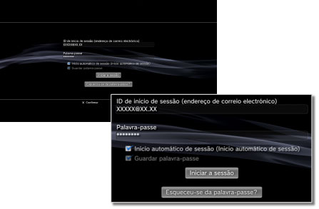

PlayStation®Network > Guardar a palavra-passe / Iniciar a sessão automaticamente
Guardar a palavra-passe / Iniciar a sessão automaticamente
Para utilizar esta função, poderá ter de actualizar o software de sistema.
Se guardar a palavra-passe, esta será previamente preenchida no ecrã de registo. Se também definir a opção para registar automaticamente, o sistema PS3™ irá registar-se automaticamente na PlayStation®Network quando for ligado.
Atenção
- Ao guardar a sua palavra-passe pode permitir que outros usem os serviços PlayStation®Network ou visualizem outras informações sobre a sua conta.
- Antes de ceder o seu sistema PS3™ a um serviço autorizado, certifique-se de que cancela a opção [Guardar palavra-passe] da PlayStation®Network para todos os utilizadores. Desta forma, irá ajudar a prevenir o acesso a ou a utilização não autorizada do seu cartão de crédito ou outros dados pessoais.
- Antes de ceder o seu sistema PS3™ a terceiros por qualquer motivo, incluindo a devolução (quando permitido), certifique-se de que elimina todos os dados e repõe as predefinições no sistema PS3™. Desta forma, ajuda a evitar o acesso ou utilização não autorizada do seu cartão de crédito ou outros dados pessoais.
1. |
Seleccione |
|---|---|
2. |
Introduza a sua ID de início de sessão (endereço de correio electrónico) e a palavra-passe. |
3. |
Seleccione as caixas de verificação para [Guardar palavra-passe] e [Início automático de sessão (Início automático de sessão)].  |
Nota
Se estiver definida a opção [Início automático de sessão (Início automático de sessão)], o ícone para  (Iniciar a sessão) não voltará a ser apresentado.
(Iniciar a sessão) não voltará a ser apresentado.
Cancelar a opção de registo automático
Seleccione  (Gestão de Contas) em
(Gestão de Contas) em  (PlayStation®Network) e seleccione [Início automárico de sessão desligado] no menu das opções. Quando ligar o sistema PS3™, não irá iniciar sessão automaticamente.
(PlayStation®Network) e seleccione [Início automárico de sessão desligado] no menu das opções. Quando ligar o sistema PS3™, não irá iniciar sessão automaticamente.
Cancelar a opção de guardar a palavra-passe (apagar a palavra-passe)
1. |
Seleccione |
|---|---|
2. |
No ecrã onde introduziu a ID de início de sessão e a palavra-passe, desmarque a caixa de verificação [Guardar palavra-passe]. |
Notas
- Se estiver definida a opção de registo automático, o ícone para (Iniciar a sessão) não voltará a ser apresentado. Nesse caso, tem de cancelar primeiro a definição de registo automático.
- Mesmo que a definição de registo automático tenha sido cancelada, o registo será efectuado automaticamente se for temporariamente desligado da rede quando já estava registado.